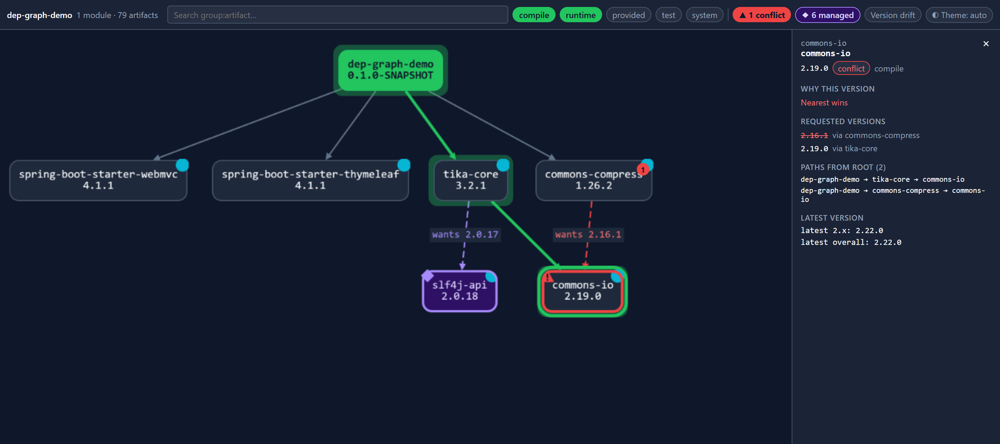

Conflicts in red
When nearest-wins drops a requested version, the winner gets a red outline and the losing edge is dashed and labelled wants 2.16.1. Red is used for nothing else.
Maven plugin · Java 21+ · Maven 3.9+ · Apache-2.0
dep-graph-maven-plugin turns your build's dependency tree into one interactive HTML page.
Click any artifact to see which version won, which ones lost, the path that requested each,
and whether a newer release exists. It's one file that opens offline.

A graph you can expand, not a 2,000-line dependency:tree dump.
“Nearest wins” or “managed by spring-boot-dependencies”, with every requesting path.
A red badge counts them. Click it to step through each one, expanded and centred.
The page reads Maven's own resolution data, so what you see is exactly what your build resolved.
When nearest-wins drops a requested version, the winner gets a red outline and the losing edge is dashed and labelled wants 2.16.1. Red is used for nothing else.
A BOM or parent dependencyManagement pin is usually deliberate, so it gets its own colour and its own toggle, and the panel names the BOM.
A cyan dot marks artifacts with a newer release. The panel shows the latest in the same major and the latest overall, using your configured repositories.
A multi-module build gets one page for the whole reactor, starting from a module overview. Shared libraries appear once, with an edge from every module that uses them.
Right-click any node to highlight every path that pulls it in, show only what it depends on, or hide its subtree. An active filter always shows as a chip.
Toggle compile, runtime, provided, test and system. Turn on version drift to spot a library that resolves differently in different modules.
Jump to any group:artifact. Arrow keys move between nodes, Enter expands, and Shift+F10 opens the menu. Dark and light themes are included.
JS, CSS and data are inlined, with no CDN, fonts or server. Attach it to a CI run, mail it to a colleague, or open it on a plane.
A synthetic 300-module build with 4,760 artifacts and 124k edges becomes a 4.3 MB page that opens in under a second.
Run this in any Maven project:
mvn dev.rabauer:dep-graph-maven-plugin:0.1.0:graphIn a multi-module build, add package -DskipTests before the goal so modules can resolve each other. Then open target/dep-graph.html.
Add the plugin to your (root) pom.xml. It runs in the package phase.
<plugin>
<groupId>dev.rabauer</groupId>
<artifactId>dep-graph-maven-plugin</artifactId>
<version>0.1.0</version>
<executions>
<execution>
<goals>
<goal>graph</goal>
</goals>
</execution>
</executions>
</plugin>mvn package then writes target/dep-graph.html next to the root POM, with one page covering every module.
| Property | Default | What it does |
|---|---|---|
depgraph.outputFile | ${project.build.directory}/dep-graph.html | Where the page is written. |
depgraph.checkLatest | true | Looks up the latest released versions at build time. Set to false to skip it. Offline builds (mvn -o) skip it automatically. |
Both pages are generated by the plugin in this repository's CI, exactly as your build would generate them.
A small upload-and-zip web app built on Spring Boot 4, Tika and commons-compress. It has one real conflict on commons-io and six versions managed by the Spring Boot BOM.
A synthetic enterprise-sized reactor with 124k edges, hundreds of conflicts and managed versions. It shows how the page stays usable at scale.
mvn dependency:tree?dependency:tree prints one module's resolved tree as text. This page covers every module of the build in one interactive graph. It keeps the versions that lost (and why), separates conflicts from BOM-managed pins, shows every path to an artifact, and flags newer releases.
No. Everything is inlined into the single HTML file. Only the optional latest-version lookup touches the network, and it runs at build time against the repositories, mirrors and credentials your build already uses.
The graph itself comes from data Maven has already resolved. The latest-version lookup is the only part that does network requests; turn it off with -Ddepgraph.checkLatest=false, or build offline.
-pl and -rf builds?The page always covers the projects in the current reactor. When the top-level project isn't part of it, the last project to build writes the page, still to target/dep-graph.html under the directory you started Maven in.
Different modules resolving different versions is often fine, for example separately deployed services. If modules really are packaged together, one depends on the other and a true clash already shows up as a red conflict inside that module.
No. It reads Maven's own resolution data, which is what makes the “why this version” answers exact.
This repository was created from scratch in the JUG Oberpfalz live coding session “From Design to Spec to Code: Building a Real UI With AI Agents” by Johannes Rabauer and Pasha Finkelshteyn. Watch the recording to see the idea, the design and the first working version come together.
Watch on YouTube